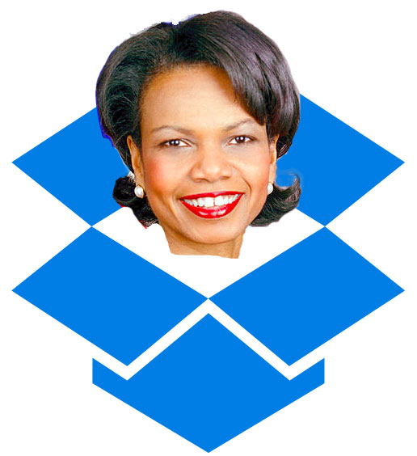

Drop Dropbox

On April 9th, Dropbox announced that Condoleezza Rice will be joining their Board of Directors. Dropbox's CEO, Drew Houston, posted the following message:
..We're proud to welcome Dr. Condoleezza Rice to our Board of Directors. When looking to grow our board, we sought out a leader who could help us expand our global footprint. Dr. Rice has had an illustrious career as Provost of Stanford University, board member of companies like Hewlett Packard and Charles Schwab, and former United States Secretary of State. We’re honored to be adding someone as brilliant and accomplished as Dr. Rice to our team.
This is deeply disturbing, and anyone — or any business — who values ethics should be concerned.
Why is this? Because she was a part of the Bush administration? Because she is a Republican and we should hate Republicans? I mean, come on, isn't Al Gore on Apple's Board? He's no saint!
No. This is not an issue of partisanship. It makes sense that Dropbox would want an accomplished, high-level, well-connected individual on their Board of Directors as they prepare for their IPO. There is no doubt that Condoleezza Rice is an extremely brilliant and accomplished individual, having obtained her Masters degree at only age 20 (and a number of other impressive accomplishments).
Choosing Condoleezza Rice for Dropbox's Board is problematic on a number of deeper levels, and invites serious concerns about Drew Houston and the senior leadership at Dropbox's commitment to freedom, openness, and ethics. When a company quite literally has access to all of your data, ethics become more than a fun thought experiment.
Why Condoleezza Rice should not hold power at Dropbox
She helped start the Iraq War
Many people mistakenly believe that Condoleezza Rice simply served as the Secretary of State and didn't have a role in the decision to go to war with Iraq. In fact, Condoleezza Rice was President Bush's National Security Advisor during the lead-up to the Iraq War, and was intimately involved in the decision to go to war with Iraq and spoke publicly in support of it. She was an integral part of the Bush administration's campaign of lies surrounding the war, working to further public support of the war by lying about Iraq's non-existent weapons of mass destruction. In January of 2003, Rice published an editorial in the New York Times entitled "Why We Know Iraq Is Lying". Here's a choice quote:
..if a larger type of warhead that Iraq has made and used in the past were filled with VX (an even deadlier nerve agent) and launched at a major city, it could kill up to one million people
In an interview with CNN during the buildup to the war, Rice said the following, which made headlines around the world:
The problem here is that there will always be some uncertainty about how quickly he can acquire nuclear weapons. But we don't want the smoking gun to be a mushroom cloud.
The Iraq War directly caused over 120,000 civilians to die. The total body count, including soldiers, is nearly 188,000. Nearly 5,000 US and coalition forces were killed. Over 30,000 were seriously wounded. According to a mortality study by researchers at the University of Washington, Simon Fraser University and John Hopkins, approximately 500,000 died in Iraq as a direct or indirect result of the war.
She was involved in the creation of the Bush administration's torture program
Rice played a central role in affirming the "legality" of the Bush administration's torture program. A Senate report revealed that Rice verbally agreed to allow torture methods to be used on captured suspects, and then lied about the extent to which she was involved.
Rice not only supports warrantless wiretaps, she authorized several
Rice not only spoke in favor of the Bush administration's warrantless wiretap program and expansive domestic surveillance program, she authorized the warrantless wiretap of UN Security Council members.
Given everything we now know about the US's warrantless surveillance program, and Rice's role in it, why on earth would we want someone like her involved with Dropbox, an organization we are trusting with our most important business and personal data?
Rice was on the Board of Directors at Chevron
Guess what Rice did right before she joined the Bush administration? She was on the Board of Directors at Chevron. Chevron liked her so much they named an oil tanker after her.
Well, maybe she just knows how to play the game. She was just going along with the administration’s wishes, and that's just how politics works, right?
Condoleezza Rice could have resigned from the Bush Administration if she believed these actions — all of which she was deeply involved with — were wrong. She did not. It's naive to believe she was simply going along with orders and was powerless to speak out or resign. Until 1982, Rice was a registered Democrat and voted for Jimmy Carter. Shortly thereafter, she changed her party affiliation because "in part because she disagreed with the foreign policy of [the President]." To deny her agency over her own actions is to dismiss her own intelligence and history. She may be backpedaling now, but this is crystal clear:
Condoleezza Rice should not be on the Board of Directors of Dropbox and her selection shows that Drew Houston and the senior management at Dropbox are ethically short-sighted.
Tell Drew Houston: drop Condoleezza Rice or we will #DropDropbox

Tell Drew Houston: unless you remove Condoleezza Rice from the Dropbox Board, I, and/or my organization, will stop using Dropbox and move to an alternative cloud storage provider:
Alternatives to Dropbox
Despite its sky-high valuation, Dropbox is not a terribly complex product to replicate. There are a number of fantastic alternatives, some of which are even fully encrypted and open-source, for you and your business to switch to, such as:
- Box.com
- Microsoft OneDrive
- Google Drive
- SpiderOak
- Copy
- ownCloud (open source)
- Overview of some alternatives at PCWorld
- Overview of some alternatives at Lifehacker
You can also read our guide on how to #DropDropbox.
Waterboarding photo by Salim Virji, Creative Commons Attribution-Sharealike. Chevron oil photo by Fernando Alvarado. NSA photo by EFF. Photo of Drew Houston by the Financial Times. Condoleezza Rice photo by the US State Department and is public domain. Dropbox logo is trademark Dropbox Inc. and used under the Fair Use doctrine of US Copyright law.